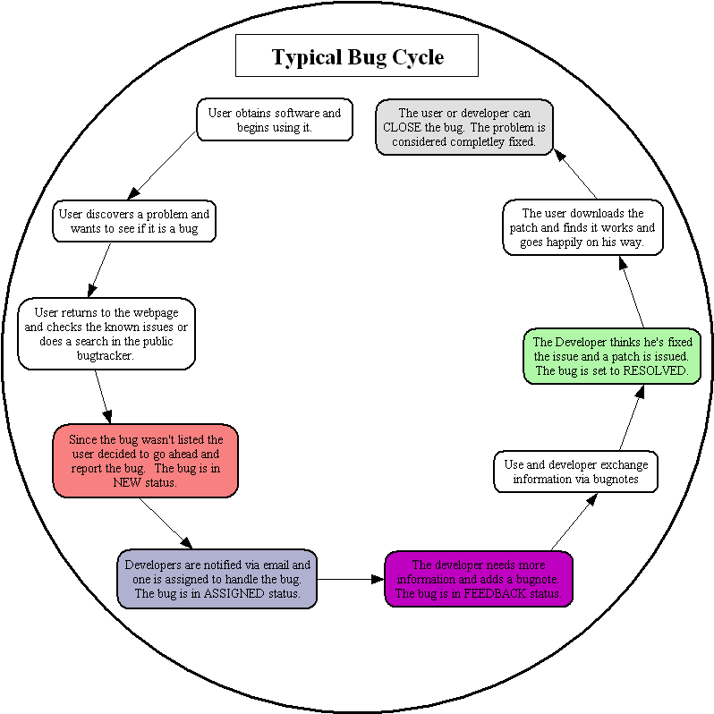

Mantis学习笔记
在错误追踪系统中，Mantis绝对是个轻量级的工具，无论安装还是配置或使用，正如它自己的目标中所宣称的。但是，对一个中小型的项目来言，功能够用。
非常感谢车东的推荐，也使我进一步关注学习成本和够用就好的观点。
0、介绍
Mantis是一个基于php/MySQL/web的开源的错误追踪系统。
Mantis中的bug追踪及处理和管理流程参考下图。

默认的mantis用户类型及其权限叁看下表，具体使用时可据需要修改名称及增删用户类型），
| | View Bug | Report Bug | Update Bug | Assign Bug | Resolve Bug | Close Bug | Reopen Bug | Delete Bug |
| Viewer | Y | N | N | N | N | N | N | N |
| Reporter | Y | Y | N | N | N | N | N | N |
| Updater | Y | Y | Y | Y | Y | Y | Y | N |
| Developer | Y | Y | Y | Y | Y | Y | Y | Y |
| Manager | Y | Y | Y | Y | Y | Y | Y | Y |
| Administrator | Y | Y | Y | Y | Y | Y | Y | Y |
1、下载
现在最高版本是0.18.0rc1，安装要求PHP版本为4.0.3 或以上，MySQL版本为3.23.2或以上（它计划在其2.0版本中支持其它关系数据库）。
2、安装
1）解压缩
$tar zxvf mantis-0.18.0rc1.gz
$mv mantis-0.18.0rc1 mantis
2)建立数据库mantis及用户mantis
$mysqladmin -u root -p密码 create mantis
$mysql -u root -p密码
mysql>GRANT SELECT,INSERT,UPDATE,DELETE,INDEX, ALTER,CREATE,DROP,REFERENCES ON mantis.* TO mantis@localhost IDENTIFIED BY '你指定的密码';
mysql>FLUSH PRIVILEGES;
mysql>\q
3)修改配置文件
$cd mantis
$cp config_inc.php.sample config_inc.php
$vi config_inc.php
修改以下几行为
$g_db_username = "mantis";
$g_db_password = "你在建立用户时指定的密码";
$g_database_name = "mantis";
增加以下几行
$g_path = "http://www.yourdomain.com/bugtrack/";
$g_icon_path = $g_path."images/";
$g_absolute_path = "/解压缩的目录/mantis/";#此处的mantis要和第1）步中mv的目标一致
$g_use_iis = OFF;#我用的是linux
$g_show_version = ON;
然后根据具体情况设置那一堆email.
4)做汉化
有几个人已经做了汉化，此处只需要配置
$vi config_inc.php
修改下一行为
$g_default_language = 'chinese_simplified';
$vi sql/db_generate.sql
language varchar(32) NOT NULL default 'chinese_simplified',
5)创建数据库的表
$mysql -u mantis -p你指定的密码 mantis < sql/db_generate.sql
6)修改apache的配置文件并重新启动
$vi /etc/httpd/conf/httpd.conf
增加以下几行（供参考）：
Alias /bugtrack/ "/解压缩目录/mantis/"
Options Indexes MultiViews Includes FollowSymLinks +ExecCGI
AllowOverride None
Order allow,deny
Allow from all
注:此处的bugtrack要与第三步中的$g_path中的bugtrack保持一致
$su -
#service httpd restart
7)通过浏览器访问http://www.yourdomain.com/bugtrack/。
如果出现登录页面，则一切OK！
3、应用
以administrator用户登录，密码为root，新建一个用户，权限为administrate。以新用户登录，删除administor.
同时，将安装目录/mantis下admin目录删除。
Posted by Hilton at October 4, 2003 05:32 PM
| TrackBack